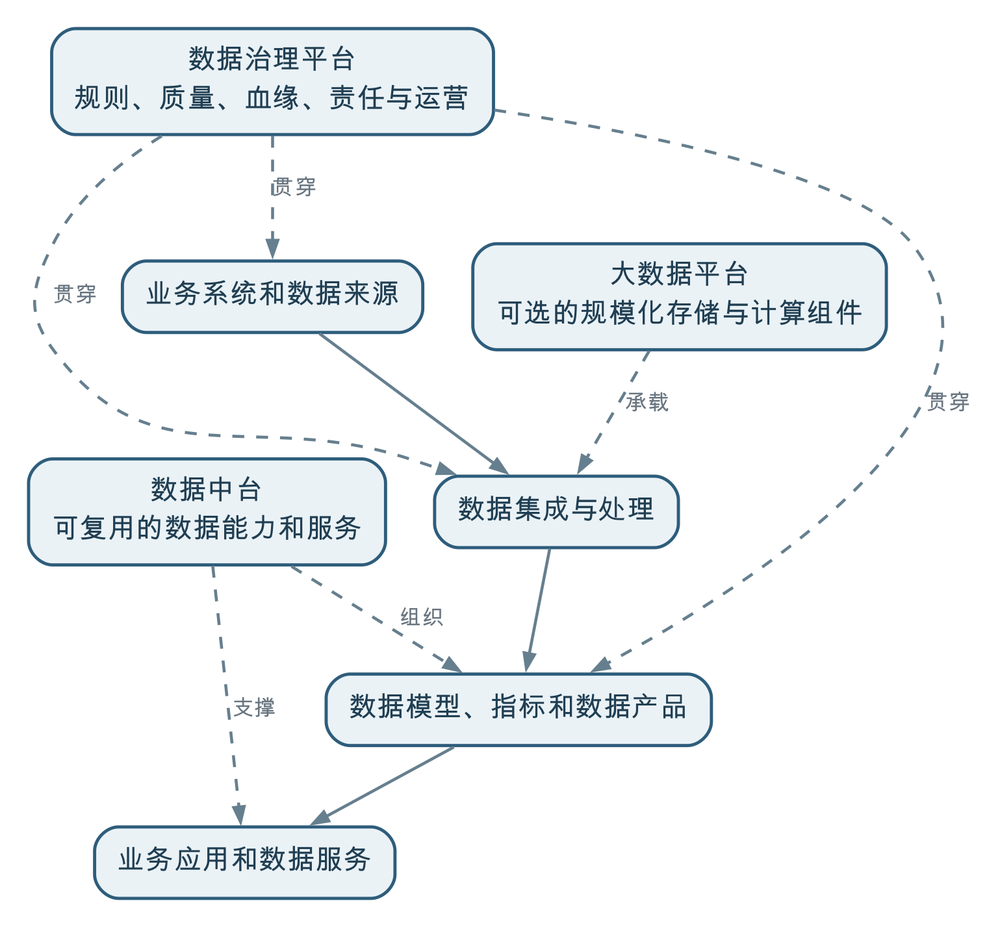

大数据平台主要解决海量、多类型或高频数据的规模化存储与计算，是数据中台和数据治理平台可以选用的技术组件；数据中台偏重沉淀和复用数据能力，数据治理平台偏重标准、质量、血缘、责任和规则运营，但在以业务增值为目标的实践中，两者会有明显重叠。
这三个概念经常被当成同一个平台的不同叫法。实际上，它们首先关注的问题不同：大数据平台关注技术规模，数据中台关注能力复用，数据治理平台关注数据规则和持续运营。一个组织可以同时使用三者，也可以根据数据规模和业务需要只建设其中一部分能力。
大数据平台通常提供分布式存储、批量计算、流式计算、数据采集、任务调度、资源管理和多类型数据处理能力，用来应对传统单机数据库难以承受的数据规模、数据类型或处理频率。
它适合处理：
但“大数据”不是所有组织的必选项。如果数据量有限、更新周期较长、业务场景较少，关系数据库、数据仓库和常规调度工具可能已经足够。为了体现技术先进而建设大数据平台，往往会增加运维复杂度，却不一定增加业务价值。
因此，大数据平台是数据中台与数据治理平台的可选技术组件之一，核心价值是解决“规模化存储和计算”，而不是自动完成数据治理或数据能力复用。
数据中台通常希望把多个业务系统中的数据和模型沉淀为可复用能力，减少每个部门重复取数、重复建模和重复开发。它可能提供：
数据中台的关键不只是把数据集中起来，而是让数据能够被多个业务场景方便、稳定地复用。如果同一个客户、地块或项目，每个部门仍然各自定义、各自加工和各自发布，就没有真正形成中台能力。
数据治理平台通常承载以下能力：
它的重点不是简单生产一个报表，而是让组织知道数据从哪里来、含义是什么、质量如何、谁负责、发生变化后影响什么，以及问题如何得到处理。
这里所说的“偏重”，是在区分三类概念的主要责任，不是在规定一套固定的软件功能清单。面向业务增值的数据治理平台还可能提供统一连接、数据开发、模型与指标加工、数据服务、运行监控和使用反馈，或者与提供这些能力的专业工具协同。第084问将进一步从平台整体能力和治理闭环的角度展开说明。
可以用下面的方式理解它们的关系：

大数据平台更像是可被多个数据能力使用的技术基础；数据中台更像是把数据、模型和服务组织成可复用能力；数据治理平台则贯穿数据来源、加工、产品和使用过程，确保规则、质量、责任和变化能够被管理。
在一些传统项目中，数据治理平台主要负责目录、标准、质量和血缘，数据中台负责模型、指标、标签和服务，两者边界相对清楚。
但本书强调“让数据为业务增值”。如果治理平台只记录规则和问题，却不帮助组织完成数据汇聚、实体建模、维度建模、指标计算和数据产品发布，治理成果很难真正进入业务。
因此，本书中的数据治理平台会包含一部分通常被称为数据中台的能力，例如：
这并不意味着两者完全等同，而是说明边界会随组织目标和产品设计发生重叠。更可靠的区分方式不是看产品名称，而是看它主要对什么结果负责：
| 主要责任 | 更偏向的概念 |
|---|---|
| 让海量数据能够稳定存储和计算 | 大数据平台 |
| 让数据模型、指标、标签和服务被多个场景复用 | 数据中台 |
| 让定义、质量、责任、血缘、权限和变更可持续运营 | 数据治理平台 |
| 让治理后的数据真正形成业务成果 | 价值导向的数据治理与数据中台共同承担 |
省级或部委级自然资源项目需要整合土地调查、确权、规划、供地、审批、建设和利用评价数据，支撑低效用地识别、项目监管和规划决策。
在省级或部委级项目中，矢量数据规模可能达到千万级甚至更高。开展地块叠加、空间关联、拓扑分析和多源比对时，单机数据库或单机程序往往难以在可接受时间内完成。这时可以引入 Spark 等分布式计算框架，将数据和计算任务分布到多个节点并行执行。
这并不意味着所有自然资源项目都必须建设完整的大数据平台。数据规模、空间计算复杂度、任务时限和并发要求较低时，关系数据库和数据仓库仍然可以满足需求；是否引入分布式存储和计算，应由实际工作负载决定。
可以沉淀统一地块、项目、权属、规划和审批等业务对象，形成低效用地指标、项目进度指标、空间分析服务和可供多个部门调用的数据产品。
需要持续管理地块标识、权属和利用类型的权威来源，记录空间质量、时间版本、指标口径、数据血缘和责任主体，并在权属或利用类型变化后重新计算受影响的识别结果。
三类能力可以部署在同一套系统中，也可以由不同系统提供。关键是职责清楚、链路可追溯、业务结果可验证，而不是一定要分别购买三个名为“大数据平台”“数据中台”和“治理平台”的产品。
平台选型应由数据规模、类型、处理频率、并发和运维能力共同决定。小规模、低频率场景不必为了概念先进而引入复杂架构。
大数据平台解决存储和计算问题，不会自动统一业务口径、分配责任或推动质量整改。
集中存储只是基础。没有可复用的模型、指标、服务和运营机制，数据仍然会被各部门重复加工。
如果治理不参与标准落地、质量运行、模型建设、指标计算和数据产品服务，就很难实现“让数据为业务增值”。
平台边界可以按组织和技术条件组合。应先明确业务目标和责任，再决定哪些能力需要独立建设、哪些可以共享或集成。
大数据平台解决规模化存储和计算，是可选的技术组件；数据中台沉淀可复用的数据能力；数据治理平台运营标准、质量、责任、血缘和规则。
在以业务增值为目标的数据治理实践中，治理平台往往会向数据中台延伸，因为标准、质量和模型只有落实为数据产品、指标和服务，才能真正被业务使用。三者可以有边界，也可以有重叠，但不能互相替代，更不能用平台名称代替业务责任和治理成效。
← 上一问：011 数据治理与数据库、数据仓库是什么关系？ · 返回目录 · 下一问：013 业务建模、行业数据模型与数据治理是什么关系？ →